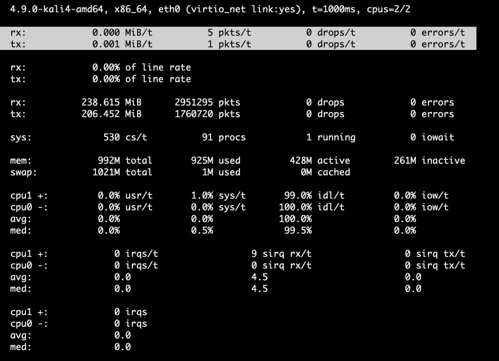
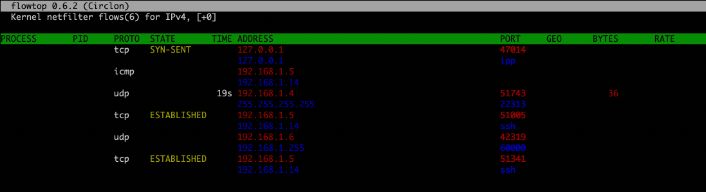

01. 介绍
- 官网：http://www.netsniff-ng.org
- 生辰：2013年
- 使命：高性能处理网络流量
- 形态：套件(
trafgen, mausezahn, bpfc, ifpps, flowtop, curvetun, astraceroute, netsniff-ng)
02. 技能
- 零拷贝(
不需要从内核态拷贝到用户态) - 发散聚合IO(
支持Scatter/gatherIO) - mmapIO(
replay pcap时用到) - slow read/write io(
遇到老硬盘落盘时可能会用到) - 绑定cpu
- 指定网卡ring-buffer(
drop数多时会用到) - 进程优先级开关
- 支持geoip库
- 流量负载(
fanout-group, fanout-type, fanout-opts) - 更底层的网络过滤(
bpfc)
查看网卡ring-buffer
1 | root@kali:~# ethtool -g eth0 |
bpf格式的过滤
1 | root@kali:~# netsniff-ng -i eth0 -f 'port 8000 and 9999' -B -n 1 |
03. 常用套路
- 复制网卡流量到tap0，绑定cpu1，sgIO模式，并过滤22和1194, 只复制host流量；
可结合openvpn桥接模式利用同一广播域抓取云上流量
1 | root@kali:~# netsniff-ng --in eth0 --out tap0 -k 1000 --b 1 -G -r --type host -f 'not port 22 and not port 1194' |
dump过滤条件为bpf格式
1
root@kali:~# netsniff-ng -i eth0 -f 'port 8000 and 9999' -B -n 1
只有输入是pcap文件时，才能输出cfg的文件1
root@kali:~# netsniff-ng --in 1.pcap --out dump.cfg
以bob组，bob用户的身份来运行netsniff-ng，
可结合配额来限定资源的使用1
root@kali:~# netsniff-ng --in eth0 --out eth1 -u `id -u bob` -g `id -g bob`
- 分流, 把em1网卡的流量分到2个netsniff-ng，分别绑定到0，1cpu，
可以指定不同的过滤规则
1 | root@kali:~# netsniff-ng --fanout-group 1 --fanout-type cpu --fanout-opts defrag --bind-cpu 0 --notouch-irq --silent --in em1 --out /var/cap/cpu0/ --interval 120sec |
- 支持的几种pcap类型
1 | root@kali:~# netsniff-ng -D |
- 动态刷新的网络统计
- -m 显示中位数， -P 显示百分比
1 | root@kali:~# ifpps -d eth0 -m -P |

- flowtop实时显示连接和流量
1 | root@kali:~# flowtop -4 -n -s -G -b -t 5 |

- tcpdump生成bpf
汇编格式
1 | root@kali:~# tcpdump -d 'port 22' |
BPFC格式
1 | root@kali:~# tcpdump -dd 'port 22' |
16进制格式
1 | root@kali:~# tcpdump -ddd 'port 22' |
- bpf过滤转为bpf opcode格式
1 | root@kali:~# cat bpf.txt |
- 结合其他工具一块使用
1 | netsniff-ng -iids_9.pcap -b0 -H -ftcp | rg 'IPv4 A' | awk '{print $4}' | tr -d '(' | sort | uniq | head | xargs -I% curl -s https://ipapi.co/%/json/ | jq -C 'select(.country_name=="Ireland") | .' |